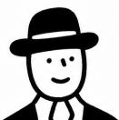

<!DOCTYPE html>
<html lang="ru">
<head>
  <meta charset="UTF-8"/>
  <meta name="viewport" content="width=device-width, initial-scale=1.0, maximum-scale=1.0"/>
  <title>ChartCraft</title>
  <script src="https://unpkg.com/react@18/umd/react.production.min.js"></script>
  <script src="https://unpkg.com/react-dom@18/umd/react-dom.production.min.js"></script>
  <script src="https://unpkg.com/@babel/standalone/babel.min.js"></script>
  <link href="https://fonts.googleapis.com/css2?family=Cinzel:wght@400;600&family=Crimson+Pro:ital,wght@0,400;1,400&display=swap" rel="stylesheet"/>
  <style>
    body { margin: 0; background: #FFF; }
  </style>
</head>
<body>
  <div id="root"></div>
  <script type="text/babel">
    const { useState, useEffect, useRef } = React;

const ZODIAC = [
  { id:"aries",       glyph:"♈", name:"Овен"      },
  { id:"taurus",      glyph:"♉", name:"Телец"     },
  { id:"gemini",      glyph:"♊", name:"Близнецы"  },
  { id:"cancer",      glyph:"♋", name:"Рак"       },
  { id:"leo",         glyph:"♌", name:"Лев"       },
  { id:"virgo",       glyph:"♍", name:"Дева"      },
  { id:"libra",       glyph:"♎", name:"Весы"      },
  { id:"scorpio",     glyph:"♏", name:"Скорпион"  },
  { id:"sagittarius", glyph:"♐", name:"Стрелец"   },
  { id:"capricorn",   glyph:"♑", name:"Козерог"   },
  { id:"aquarius",    glyph:"♒", name:"Водолей"   },
  { id:"pisces",      glyph:"♓", name:"Рыбы"      },
];
const ZI = Object.fromEntries(ZODIAC.map((z,i) => [z.id, i]));

const PLANETS = {
  sun:     { glyph:"☉",  name:"Солнце",   color:"#F4C94C" },
  moon:    { glyph:"☽",  name:"Луна",     color:"#B8CCD8" },
  asc:     { glyph:"Ac", name:"Асц",      color:"#8FBA88" },
  mercury: { glyph:"☿",  name:"Меркурий", color:"#C4A0E8" },
  venus:   { glyph:"♀",  name:"Венера",   color:"#E8A0B8" },
  mars:    { glyph:"♂",  name:"Марс",     color:"#E87060" },
  jupiter: { glyph:"♃",  name:"Юпитер",   color:"#C8A860" },
  saturn:  { glyph:"♄",  name:"Сатурн",   color:"#B09878" },
  uranus:  { glyph:"♅",  name:"Уран",     color:"#80C8D8" },
  neptune: { glyph:"♆",  name:"Нептун",   color:"#5B7FBF" },
  pluto:   { glyph:"♇",  name:"Плутон",   color:"#9B59B6" },
};

const ASPECTS = {
  conjunction: { glyph:"☌", name:"Соединение", deg:0,   signs:0, color:"#C9A84C" },
  sextile:     { glyph:"⚹", name:"Секстиль",   deg:60,  signs:2, color:"#7AB8D4" },
  square:      { glyph:"□", name:"Квадрат",    deg:90,  signs:3, color:"#CF6450" },
  trine:       { glyph:"△", name:"Трин",       deg:120, signs:4, color:"#8FBA88" },
  opposition:  { glyph:"☍", name:"Оппозиция",  deg:180, signs:6, color:"#E8904A" },
};

const DIFF_LABEL = { 1:"Начало", 2:"Средний", 3:"Сложный", 4:"Продвинутый", 5:"Эксперт", 6:"Мастер" };

function getAspectId(zid1, zid2) {
  let diff = Math.abs(ZI[zid1] - ZI[zid2]);
  if (diff > 6) diff = 12 - diff;
  return Object.entries(ASPECTS).find(([_, a]) => a.signs === diff)?.[0] ?? null;
}

const CASES = [
  // ── Дело: Семь улик ────────────────────────────────────────────
  {
    id:"case_001", type:"multi_aspect", quest:0, questStep:1, difficulty:6,
    title:"Дело: Семь улик",
    description:"Два ключевых игрока уже на доске. Расставь остальных — и семь улик укажут куда.",
    hints:[
      "Полон идей — но каждый старт даётся через сопротивление. Чужие проекты взлетают легко, его — только через препятствие.",
      "Читает людей насквозь и знает об этом. Говорит редко — но точно в центр.",
      "Замечает дисгармонию в пространстве раньше всего остального. Грубость воспринимает как эстетическое нарушение.",
      "В любви ищет резонанс, почти невыразимый словами. Влюбляется в образ — и разочаровывается когда реальность не совпадает.",
      "Берётся за дело широко, с размахом. Заряжает энтузиазмом всех вокруг — и сам без этого подъёма не действует.",
      "Мыслит масштабно — но когда копает, уходит в самую глубину. За широкой улыбкой всегда скрыт острый внутренний вопрос.",
      "В отношениях ищет красоту и равновесие — а в действии нужна сцена, публика и аплодисменты.",
    ],
    planetPool:["sun","mercury","venus","mars"],
    prePlaced:{ saturn:"gemini", neptune:"aquarius", jupiter:"leo", pluto:"scorpio" },
    answers:{ sun:"sagittarius", mercury:"scorpio", pluto:"scorpio", venus:"libra", mars:"leo", jupiter:"leo" },
    correctAspects:[
      { pair:["sun","saturn"],    type:"opposition"  },
      { pair:["mercury","pluto"], type:"conjunction" },
      { pair:["venus","neptune"], type:"trine"       },
      { pair:["mars","jupiter"],  type:"conjunction" },
      { pair:["saturn","neptune"],type:"trine"       },
      { pair:["jupiter","pluto"], type:"square"      },
    ],
    explanation:"",
  },
  // ── Блок 1: Только Солнце ──────────────────────────────────────
  {
    id:"q1_01", type:"signs", quest:1, questStep:1, difficulty:1,
    title:"Портрет #1",
    story:"У Джеффри случился форс-мажор на работе. Это отразилось на его отношениях с женой. Он долго молчал и не мог отпустить.",
    hints:[
      "Он действует первым — потом думает. Промедление для него невыносимо.",
      "В конфликте замолкает. Копит внутри, не выпускает наружу.",
      "На работе — пробивной, инициативный. Дома — как будто другой человек.",
      "Злится редко, но метко. Когда взрывается — сам удивляется силе реакции.",
      "Жена говорит: 'Ты всегда убегаешь в работу когда нам плохо'.",
      "Ему легче начать новое, чем разобраться со старым.",
      "В детстве научился: если больно — двигайся дальше. Не останавливайся.",
    ],
    description:"Он врывается в комнату раньше чем открывает дверь. Первым берётся за любое дело — не потому что знает как, а потому что ждать невыносимо. Проигрывает легко: уже думает о следующем.",
    planets:["mars","mercury","moon"], prePlaced:{},
    answers:{ mars:"aries", mercury:"virgo", moon:"cancer" },
    explanations:{ mars:"Марс в Овне — импульс, действие без раздумий.", mercury:"Меркурий в Деве — точность, анализ, молчаливая переработка информации.", moon:"Луна в Раке — глубокая эмоциональная память, трудно отпускает." },
  },
  {
    id:"q1_02", type:"signs", quest:1, questStep:2, difficulty:1,
    title:"Портрет #2",
    description:"Она помнит что ел каждый гость на её столе три года назад. Дом — её крепость и главный проект жизни. Когда ей больно — она уходит в себя, и никто снаружи этого не видит.",
    planets:["sun"], prePlaced:{},
    answers:{ sun:"cancer" },
    explanations:{ sun:"Солнце в Раке — архетип хранителя. Память, забота, дом как центр мира. Рак защищает своё через уход внутрь, а не через confrontation." },
  },
  {
    id:"q1_03", type:"signs", quest:1, questStep:3, difficulty:2,
    title:"Портрет #3",
    description:"Серьёзный, немногословный. Карьера выстраивается методично — шаг за шагом, без спешки. Умеет ждать. Коллеги думают что он холодный, но те кто знают его близко — знают что за этим стоит.",
    planets:["sun"], prePlaced:{},
    answers:{ sun:"capricorn" },
    explanations:{ sun:"Солнце в Козероге — архетип строителя. Терпение, структура, долгосрочная цель. Козерог не торопится — он знает что время работает на него. Внешняя сдержанность скрывает глубокую внутреннюю жизнь." },
  },
  // ── Блок 2: Солнце + Луна ──────────────────────────────────────
  {
    id:"q2_01", type:"signs", quest:2, questStep:1, difficulty:2,
    title:"Портрет #4",
    description:"В разговоре — зажигает, шутит, перепрыгивает с темы на тему. Снаружи вечное движение. Но дома, наедине с собой, ему нужна тишина и берег моря. Восстанавливается только через одиночество и воду.",
    planets:["sun","moon"], prePlaced:{},
    answers:{ sun:"gemini", moon:"pisces" },
    explanations:{
      sun:"Солнце в Близнецах — социальная живость, лёгкость контакта, потребность в разнообразии общения.",
      moon:"Луна в Рыбах — глубокая потребность в уединении, тишине, растворении. Внутренний мир богаче чем внешний.",
    },
  },
  {
    id:"q2_02", type:"signs", quest:2, questStep:2, difficulty:2,
    title:"Портрет #5",
    description:"Спокойная, основательная — не торопится с решениями. Надёжный человек, на которого можно положиться. Внутри — неожиданно вспыльчива. Долго копит, потом выдаёт всё сразу — и сама удивляется.",
    planets:["sun","moon"], prePlaced:{},
    answers:{ sun:"taurus", moon:"aries" },
    explanations:{
      sun:"Солнце в Тельце — внешняя стабильность, неспешность, надёжность. Телец не торопится — он строит прочное.",
      moon:"Луна в Овне — импульсивная эмоциональная реакция под спокойной поверхностью. Внутренний огонь скрыт за внешней флегматичностью.",
    },
  },
  {
    id:"q2_03", type:"signs", quest:2, questStep:3, difficulty:3,
    title:"Портрет #6",
    description:"Блестящий, уверенный — любит быть в центре. Щедр, великодушен. Но в близких отношениях его захлёстывает тревога: а вдруг недостаточно любят? Внутри — постоянная потребность в подтверждении что он нужен.",
    planets:["sun","moon"], prePlaced:{},
    answers:{ sun:"leo", moon:"cancer" },
    explanations:{
      sun:"Солнце во Льве — харизма, щедрость, потребность быть замеченным и оценённым. Лев светит для других.",
      moon:"Луна в Раке — глубокая эмоциональная уязвимость под уверенной поверхностью. Внутренняя потребность в принятии и безопасности.",
    },
  },
  // ── Блок 3: Солнце + Луна + Асцендент ─────────────────────────
  {
    id:"q3_01", type:"signs", quest:3, questStep:1, difficulty:2,
    title:"Портрет #7",
    description:"Первое впечатление — холодный интеллектуал, говорит точно и по делу. Но стоит узнать его ближе — открывается тёплый, щедрый человек с огромным сердцем. А наедине с собой он долго и тщательно всё анализирует, прежде чем принять решение.",
    planets:["sun","moon","asc"], prePlaced:{},
    answers:{ sun:"leo", moon:"virgo", asc:"capricorn" },
    explanations:{
      sun:"Солнце во Льве — тепло, щедрость, большое сердце. Это проявляется когда человек открывается.",
      moon:"Луна в Деве — внутренняя потребность анализировать, систематизировать, находить точность в деталях.",
      asc:"Асцендент в Козероге — внешний образ сдержанного, серьёзного, делового человека. Первое впечатление обманывает.",
    },
  },
  {
    id:"q3_02", type:"signs", quest:3, questStep:2, difficulty:3,
    title:"Портрет #8",
    description:"Окружающие видят мягкого, уступчивого человека — всегда с улыбкой, никогда не конфликтует. На самом деле у него очень чёткая позиция и железная воля. Внутри — глубокая потребность в гармонии и красоте, болезненная реакция на грубость.",
    planets:["sun","moon","asc"], prePlaced:{},
    answers:{ sun:"scorpio", moon:"libra", asc:"libra" },
    explanations:{
      sun:"Солнце в Скорпионе — сильная воля, чёткая позиция, внутренняя интенсивность скрытая за внешней мягкостью.",
      moon:"Луна в Весах — глубокая эмоциональная потребность в гармонии, красоте, отсутствии конфликта.",
      asc:"Асцендент в Весах — внешний образ дипломатичного, мягкого, приятного человека. Луна и Асц в одном знаке усиливают этот образ — но Солнце в Скорпионе совсем другое.",
    },
  },
  {
    id:"q3_03", type:"signs", quest:3, questStep:3, difficulty:3,
    title:"Портрет #9",
    description:"Выглядит беспокойным и непоследовательным — перескакивает, не доводит до конца. Но в работе — невероятная глубина и концентрация, способен полностью раствориться в задаче. Дома ему нужно движение и смена обстановки иначе становится раздражительным.",
    planets:["sun","moon","asc"], prePlaced:{},
    answers:{ sun:"scorpio", moon:"gemini", asc:"gemini" },
    explanations:{
      sun:"Солнце в Скорпионе — способность к полному погружению, концентрация, глубина в работе.",
      moon:"Луна в Близнецах — внутренняя потребность в движении, смене впечатлений, разнообразии. Эмоциональное беспокойство.",
      asc:"Асцендент в Близнецах — внешний образ непоследовательного, перескакивающего человека. Луна и Асц в одном знаке создают стойкое впечатление которое контрастирует со скорпионской глубиной Солнца.",
    },
  },
  // ── Блок 4: Личные планеты ─────────────────────────────────────
  {
    id:"q4_01", type:"signs", quest:4, questStep:1, difficulty:4,
    title:"Портрет #10",
    description:"Солнце в Тельце, Луна в Козероге, Асц в Деве. Говорит медленно и взвешенно — каждое слово на месте. Не любит абстракций, мыслит конкретными примерами и фактами. В разговоре всегда возвращает к практическому смыслу: «и что с этим делать?»",
    planets:["mercury"], prePlaced:{},
    answers:{ mercury:"taurus" },
    explanations:{ mercury:"Меркурий в Тельце — медленное, основательное мышление. Предпочитает конкретное абстрактному, практическое — теоретическому. Слова выбирает тщательно, мыслит через материальные образы." },
  },
  {
    id:"q4_02", type:"signs", quest:4, questStep:2, difficulty:4,
    title:"Портрет #11",
    description:"Солнце в Овне, Луна в Льве, Асц в Стрельце. В отношениях ищет партнёра-друга — лёгкость, свободу, совместные приключения. Влюбляется в нестандартных людей. Собственничество и ревность её отталкивают мгновенно.",
    planets:["venus"], prePlaced:{},
    answers:{ venus:"aquarius" },
    explanations:{ venus:"Венера в Водолее — притяжение к необычному, нестандартному. В любви ценит свободу и дружбу больше страсти и слияния. Идеальные отношения — два независимых человека рядом." },
  },
  {
    id:"q4_03", type:"signs", quest:4, questStep:3, difficulty:4,
    title:"Портрет #12",
    description:"Солнце в Раке, Луна в Рыбах, Асц в Тельце. Внешне — мягкий и неспешный. Но когда берётся за цель — методично, настойчиво, без лишнего шума. Не останавливается. Злится редко, но если довести — долго и тяжело.",
    planets:["mars"], prePlaced:{},
    answers:{ mars:"capricorn" },
    explanations:{ mars:"Марс в Козероге — одно из сильнейших положений Марса (экзальтация). Действие методичное, терпеливое, направленное на долгосрочный результат. Энергия не тратится впустую — она инвестируется." },
  },
  {
    id:"q4_04", type:"signs", quest:4, questStep:4, difficulty:4,
    title:"Портрет #13",
    description:"Солнце в Близнецах, Луна в Весах, Асц в Водолее. Анализирует всё и сразу — мозг не выключается никогда, идеи сыплются потоком. В любви ищет красоту и утончённость, тянется к творческим людям и эстетике. Действует вспышками — горит идеей, бросается в неё, быстро сгорает.",
    planets:["mercury","venus","mars"], prePlaced:{},
    answers:{ mercury:"gemini", venus:"libra", mars:"aries" },
    explanations:{
      mercury:"Меркурий в Близнецах — домашний знак Меркурия. Быстрое, ассоциативное мышление, поток идей, лёгкость с языком и информацией.",
      venus:"Венера в Весах — домашний знак Венеры. Тяга к красоте, гармонии, утончённости. В отношениях ищет равновесие и эстетику.",
      mars:"Марс в Овне — домашний знак Марса. Действие через вспышку, импульс, энтузиазм. Энергия мощная но быстро сгорает.",
    },
  },
  // ── Блок 5: Введение в аспекты ────────────────────────────────
  {
    id:"q5_01", type:"aspect_build", quest:5, questStep:1, difficulty:4,
    title:"Аспект #1",
    description:"Солнце стоит в Овне. Поставь Сатурн в трин к Солнцу.",
    planetPool:["saturn"],
    prePlaced:{ sun:"aries" },
    correctPair:["sun","saturn"],
    correctAspect:"trine",
    explanation:"Трин (120°) — гармоничный аспект. Овен (1й знак) + 4 знака = Лев (5й знак). Трин соединяет знаки одной стихии: Овен и Лев — оба Огонь. Энергия течёт свободно, без трения.",
  },
  {
    id:"q5_02", type:"aspect_build", quest:5, questStep:2, difficulty:4,
    title:"Аспект #2",
    description:"Луна стоит в Раке. Поставь Марс в оппозицию к Луне.",
    planetPool:["mars"],
    prePlaced:{ moon:"cancer" },
    correctPair:["moon","mars"],
    correctAspect:"opposition",
    explanation:"Оппозиция (180°) — противостояние. Рак (4й знак) + 6 знаков = Козерог (10й знак). Оппозиция всегда соединяет противоположные знаки зодиака. Луна в Раке и Марс в Козероге — эмоциональная потребность в безопасности против воли к достижению.",
  },
  {
    id:"q5_03", type:"aspect_build", quest:5, questStep:3, difficulty:4,
    title:"Аспект #3",
    description:"Человек одновременно стремится к свободе и независимости — и к глубокой эмоциональной близости. Эти два желания тянут в разные стороны. Поставь Венеру и Уран в квадрат.",
    planetPool:["venus","uranus"],
    prePlaced:{},
    correctPair:["venus","uranus"],
    correctAspect:"square",
    explanation:"Квадрат (90°) — напряжение между двумя принципами. Венера — близость, привязанность, потребность в союзе. Уран — свобода, независимость, разрыв с привычным. Квадрат создаёт внутренний конфликт: хочу близости и хочу свободы одновременно.",
  },
  {
    id:"q5_04", type:"aspect_build", quest:5, questStep:4, difficulty:4,
    title:"Аспект #4",
    description:"Мышление этого человека — мощный инструмент трансформации. Он видит то что другие не замечают, докапывается до сути. Иногда это пугает его самого. Слова имеют для него особый вес — он знает что они меняют реальность.",
    planetPool:["mercury","pluto","saturn","neptune","sun"],
    prePlaced:{},
    correctPair:["mercury","pluto"],
    correctAspect:"conjunction",
    explanation:"Соединение ☿–♇ — Меркурий (мышление, речь) слит с Плутоном (трансформация, глубина, скрытое). Мысль приобретает плутонианское качество: проникающая, необратимая, способная вскрывать то что лежит под поверхностью. Слова такого человека — не просто информация.",
  },
  // ── Блок 6: Аспекты полностью ─────────────────────────────────
  {
    id:"q6_01", type:"aspect_build", quest:6, questStep:1, difficulty:4,
    title:"Аспект #5",
    description:"Всю жизнь ощущает противоречие между собственной волей и внешними ограничениями. Хочет действовать — что-то останавливает. Добивается своего — но всегда через сопротивление, никогда легко.",
    planetPool:["sun","saturn","jupiter","moon","venus"],
    prePlaced:{},
    correctPair:["sun","saturn"],
    correctAspect:"opposition",
    explanation:"Оппозиция ☉–♄. Солнце — воля, инициатива, самовыражение. Сатурн — ограничение, структура, требование реальности. В оппозиции они стоят лицом к лицу: каждое действие встречает равное противодействие. Не блокировку — а вызов, который закаляет.",
  },
  {
    id:"q6_02", type:"aspect_build", quest:6, questStep:2, difficulty:5,
    title:"Аспект #6",
    description:"Интуиция работает как радар — чувствует людей и ситуации раньше чем успевает подумать. Иногда это дар, иногда — источник спутанности: трудно отличить своё от чужого, реальное от воображаемого.",
    planetPool:["moon","neptune","mercury","uranus","saturn"],
    prePlaced:{},
    correctPair:["moon","neptune"],
    correctAspect:"conjunction",
    explanation:"Соединение ☽–♆. Луна (эмоции, интуиция, восприятие) растворяется в Нептуне (иллюзия, тонкое восприятие, слияние). Границы между собой и миром становятся проницаемыми. Высшее проявление — эмпатия и художественная чувствительность. Вызов — сохранить себя.",
  },
  {
    id:"q6_03", type:"aspect_build", quest:6, questStep:3, difficulty:5,
    title:"Аспект #7",
    description:"Говорит легко и красиво — слова приходят сами. Умеет убеждать не давя, вдохновлять не навязывая. Люди тянутся к нему в разговоре — есть в его речи что-то притягивающее и успокаивающее одновременно.",
    planetPool:["mercury","venus","sun","jupiter","moon"],
    prePlaced:{},
    correctPair:["mercury","venus"],
    correctAspect:"conjunction",
    explanation:"Соединение ☿–♀. Меркурий (речь, мышление) слит с Венерой (красота, притяжение, гармония). Речь приобретает венерианское качество: мягкая, эстетичная, притягивающая. Классическое положение для поэтов, дипломатов, переговорщиков — тех кто умеет говорить красиво и убедительно.",
  },
  // ── Блок 7: Сложносоставные задания ───────────────────────────
  {
    id:"qc_01", type:"aspect_build", quest:7, questStep:1, difficulty:5,
    title:"Дело #1",
    description:"После 40 лет она бросила стабильную карьеру юриста и уехала учиться живописи в другую страну. Коллеги были в шоке. Муж не понимал. Она сама не могла объяснить — просто в один день что-то внутри щёлкнуло и старая жизнь стала невозможной.",
    planetPool:["sun","saturn","uranus","venus","moon","jupiter"],
    prePlaced:{},
    correctPair:["sun","uranus"],
    correctAspect:"conjunction",
    explanation:"Транзитный Уран соединился с натальным Солнцем — классика «кризиса середины жизни». Солнце — идентичность, то кем ты являешься. Уран — разрыв, пробуждение, невозможность жить по-старому. Соединение: два принципа сливаются в один момент. Не постепенно — а щелчок. Сатурн был бы про ограничение и структуру, Юпитер — про расширение без разрыва. Только Уран даёт эту внезапную необратимость.",
  },
  {
    id:"qc_02", type:"aspect_build", quest:7, questStep:2, difficulty:5,
    title:"Дело #2",
    description:"Всю жизнь он строил — карьеру, семью, репутацию. Надёжный, ответственный, на него всегда можно положиться. Но в разговорах о будущем у него появляется странная тревога: а вдруг всё что построено — рассыплется? Контролирует каждую деталь. Не умеет делегировать. Физически плохо переносит неопределённость.",
    planetPool:["saturn","moon","mercury","mars","neptune","pluto"],
    prePlaced:{},
    correctPair:["moon","saturn"],
    correctAspect:"square",
    explanation:"Квадрат ☽–♄. Луна — эмоциональная потребность в безопасности, внутренний ребёнок. Сатурн — требование структуры, контроля, ответственности. В квадрате они в постоянном трении: потребность в уюте и покое сталкивается с тревогой что недостаточно контролируешь реальность. Результат — человек строит снаружи (Сатурн) чтобы успокоить тревогу внутри (Луна). Но тревога не уходит — потому что она не про внешнее.",
  },
  {
    id:"qc_03", type:"aspect_build", quest:7, questStep:3, difficulty:5,
    title:"Дело #3",
    description:"Блестящий оратор, харизматичный лидер. Когда говорит — все слушают. Идеи захватывают, образы точные, убеждает легко. Но в близком общении — неожиданно закрытый. Слова для публики и слова для одного человека — будто два разных человека.",
    planetPool:["mercury","sun","venus","moon","jupiter","saturn"],
    prePlaced:{},
    correctPair:["mercury","sun"],
    correctAspect:"conjunction",
    explanation:"Соединение ☿–☉ (Казими или близко). Меркурий слился с Солнцем — речь и мышление стали выражением самой идентичности. Говорить публично = быть собой. Но в близости Солнце требует признания, а не диалога — отсюда закрытость один на один. Венера дала бы теплоту в близком общении. Юпитер — масштаб но не эту специфическую связь речи и личности.",
  },
  {
    id:"qc_04", type:"aspect_build", quest:7, questStep:4, difficulty:6,
    title:"Дело #4",
    description:"В детстве — тихий, незаметный. В 30 лет что-то начало меняться: стала требовательнее к себе, потом к другим. К 40 — жёсткий руководитель, высокие стандарты, нетерпимость к слабости. Коллеги боятся. Она сама иногда не узнаёт себя в зеркале.",
    planetPool:["saturn","pluto","sun","mars","moon","jupiter"],
    prePlaced:{},
    correctPair:["saturn","pluto"],
    correctAspect:"conjunction",
    explanation:"Соединение ♄–♇ — одно из самых тяжёлых и трансформирующих. Сатурн (структура, требование, власть через дисциплину) + Плутон (трансформация, интенсивность, власть через контроль). Слияние даёт человека который строит себя через разрушение слабости — своей и чужой. Проявляется не сразу, нарастает с возрастом. Марс дал бы агрессию без этой холодной системности. Только Сатурн-Плутон даёт эту нарастающую трансформацию через требование.",
  },
  {
    id:"qc_05", type:"aspect_build", quest:7, questStep:5, difficulty:6,
    title:"Дело #5",
    description:"Художник. Работы — тонкие, атмосферные, почти медитативные. В жизни — рассеянный, теряет вещи, опаздывает. Финансы в хаосе. Но когда садится за работу — полная концентрация, часы исчезают. После творческого периода — ощущение что побывал где-то далеко и вернулся не полностью.",
    planetPool:["neptune","moon","mercury","sun","venus","saturn"],
    prePlaced:{},
    correctPair:["sun","neptune"],
    correctAspect:"conjunction",
    explanation:"Соединение ☉–♆. Солнце (идентичность, присутствие в реальности) растворяется в Нептуне (трансцендентное, творческое, иллюзия). В творчестве это дар — полное слияние с потоком. В быту — проблема: границы между собой и миром размыты, реальность ускользает. «Вернулся не полностью» — точное описание нептунианского опыта. Луна-Нептун дала бы эмоциональную проницаемость, но не эту связь творчества с идентичностью.",
  },
];

const toRad = d => d * Math.PI / 180;
const CX = 185, CY = 185, OR = 160, IR = 65, R_ZOD = 124;

const ELEM = ['fire','earth','air','water','fire','earth','air','water','fire','earth','air','water'];
const EC = {
  fire:  { rf:'#D8907A', glyph:'#FDFAF4' },
  earth: { rf:'#A8A070', glyph:'#FDFAF4' },
  air:   { rf:'#7898C8', glyph:'#FDFAF4' },
  water: { rf:'#9070C0', glyph:'#FDFAF4' },
};
const INNER_FILL = '#FFF';

function arcPath(i, r1, r2) {
  const s = toRad(180 - i*30), e = toRad(180 - (i+1)*30);
  const cs=Math.cos(s),ss=Math.sin(s),ce=Math.cos(e),se=Math.sin(e);
  return `M${CX+r2*cs} ${CY+r2*ss} A${r2} ${r2} 0 0 0 ${CX+r2*ce} ${CY+r2*se} L${CX+r1*ce} ${CY+r1*se} A${r1} ${r1} 0 0 1 ${CX+r1*cs} ${CY+r1*ss}Z`;
}
function sectorPath(i) { return arcPath(i, IR, OR); }
function midPos(i, r) {
  const a = toRad(180 - i*30 - 15);
  return { x: CX + r*Math.cos(a), y: CY + r*Math.sin(a) };
}
function innerEdge(i) {
  const a = toRad(180 - i*30 - 15);
  return { x: CX + IR*Math.cos(a), y: CY + IR*Math.sin(a) };
}

function App() {
  const [caseIdx, setCaseIdx] = useState(1);
  const [phase, setPhase]     = useState("playing");
  const [placements, setPlacements] = useState({});
  const [sel, setSel]         = useState(null);
  const [hintIdx, setHintIdx]           = useState(0);
  const [hintsUnlocked, setHintsUnlocked] = useState(1);
  const [timeLeft, setTimeLeft]         = useState(120);
  const [timedOut, setTimedOut]         = useState(false);
  const [usedHints, setUsedHints]       = useState(new Set());
  const [openHint, setOpenHint]         = useState(null);
  const timerRef = useRef(null);

  const cas = CASES[caseIdx];

  const maxAspPlacements = cas.type === "aspect_build"
    ? 2 - Object.keys(cas.prePlaced || {}).length
    : 2;

  const z2pArr = {};
  Object.entries(placements).forEach(([p, z]) => {
    if (!z2pArr[z]) z2pArr[z] = [];
    z2pArr[z].push(p);
  });

  const preZ2pArr = {};
  Object.entries(cas.prePlaced || {}).forEach(([p, z]) => {
    if (!preZ2pArr[z]) preZ2pArr[z] = [];
    preZ2pArr[z].push(p);
  });

  const allZ2pArr = { ...preZ2pArr };
  Object.entries(z2pArr).forEach(([z, pids]) => {
    allZ2pArr[z] = [...(allZ2pArr[z] || []), ...pids];
  });

  const chipPool = cas.type === "signs"
    ? cas.planets.map(id => ({ id, ...PLANETS[id] }))
    : (cas.planetPool || []).map(id => ({ id, ...PLANETS[id] }));

  const allPlaced = (() => {
    if (cas.type === "signs")        return cas.planets.every(pid => placements[pid]);
    if (cas.type === "aspect_build") return Object.keys(placements).length >= maxAspPlacements;
    if (cas.type === "multi_aspect") return cas.planetPool.every(pid => placements[pid]);
    if (cas.type === "ruler")        return !!placements[cas.answer?.planet];
    return false;
  })();

  const selPlanet = sel ? PLANETS[sel] : null;
  const aspAll = { ...(cas.prePlaced || {}), ...placements };

  const liveAspect = (() => {
    if (cas.type !== "aspect_build") return null;
    if (Object.keys(aspAll).length !== 2) return null;
    const [pid1, pid2] = Object.keys(aspAll);
    const z1 = aspAll[pid1], z2 = aspAll[pid2];
    const p1 = innerEdge(ZI[z1]), p2 = innerEdge(ZI[z2]);
    return { x1:p1.x, y1:p1.y, x2:p2.x, y2:p2.y, aspectId: getAspectId(z1, z2) };
  })();

  const signsResults = {};
  if (phase === "checked" && cas.type === "signs") {
    cas.planets.forEach(pid => {
      signsResults[pid] = placements[pid] === cas.answers[pid] ? "correct" : "wrong";
    });
  }
  const signsScore = Object.values(signsResults).filter(r => r === "correct").length;

  const aspectResult = (() => {
    if (phase !== "checked" || cas.type !== "aspect_build") return null;
    const pids = Object.keys(aspAll);
    const pairOk = cas.correctPair.every(p => pids.includes(p));
    const aspectId = pids.length === 2 ? getAspectId(aspAll[pids[0]], aspAll[pids[1]]) : null;
    return { pairOk, aspectId, aspectOk: pairOk && aspectId === cas.correctAspect };
  })();

  const liveAspects = (() => {
    if (cas.type !== "multi_aspect") return null;
    return cas.correctAspects.map(({ pair, type }) => {
      const z1 = aspAll[pair[0]], z2 = aspAll[pair[1]];
      if (!z1 || !z2) return null;
      const p1 = innerEdge(ZI[z1]), p2 = innerEdge(ZI[z2]);
      const aspectId = getAspectId(z1, z2);
      return { x1:p1.x, y1:p1.y, x2:p2.x, y2:p2.y, aspectId, correctType: type };
    }).filter(Boolean);
  })();

  const multiAspectResults = (() => {
    if (phase !== "checked" || cas.type !== "multi_aspect") return null;
    return cas.planetPool.map(pid => {
      const placed  = placements[pid];
      const correct = cas.answers[pid];
      return { pid, placed, correct, ok: placed === correct };
    });
  })();

  const hints = cas.hints || [];

  const handleSector = (zid) => {
    if (phase !== "playing") return;
    if (cas.type !== "multi_aspect" && (preZ2pArr[zid] || []).length > 0) return;
    if (!sel) {
      const placed = z2pArr[zid] || [];
      if (placed.length === 0) return;
      const pid = placed[placed.length - 1];
      const np = {...placements}; delete np[pid]; setPlacements(np); setSel(pid);
      return;
    }
    if (cas.type === "aspect_build" && Object.keys(placements).length >= maxAspPlacements) return;
    const np = {...placements};
    np[sel] = zid;
    setPlacements(np); setSel(null);
  };

  const handleChip = (pid) => {
    if (phase !== "playing") return;
    if (sel === pid) { setSel(null); return; }
    if (cas.type === "aspect_build") {
      const placed = Object.keys(placements);
      if (placed.length >= maxAspPlacements && !placements[pid]) return;
    }
    if (placements[pid]) {
      const np = {...placements}; delete np[pid]; setPlacements(np);
    }
    setSel(pid);
  };

  const resetHintsTimer = () => { setHintIdx(0); setHintsUnlocked(1); setTimeLeft(120); setTimedOut(false); setUsedHints(new Set()); setOpenHint(null); };
  const goTo  = (i) => { setCaseIdx(i); setPhase("playing"); setPlacements({}); setSel(null); resetHintsTimer(); };
  const retry = ()  => { setPhase("playing"); setPlacements({}); setSel(null); resetHintsTimer(); };

  useEffect(() => {
    clearInterval(timerRef.current);
    if (phase !== "playing") return;
    timerRef.current = setInterval(() => {
      setTimeLeft(t => {
        if (t <= 1) { clearInterval(timerRef.current); setPhase("checked"); setTimedOut(true); return 0; }
        return t - 1;
      });
    }, 1000);
    return () => clearInterval(timerRef.current);
  }, [phase, caseIdx]);

  const { hintText, hintColor } = (() => {
    if (phase !== "playing") return { hintText:"", hintColor:"#605848" };
    if (sel) return { hintText:`↑ Поставь ${selPlanet?.name}`, hintColor: selPlanet?.color };
    if (cas.type === "aspect_build") {
      if (liveAspect?.aspectId) {
        const a = ASPECTS[liveAspect.aspectId];
        const aspPids = Object.keys(aspAll);
        const pairOk = cas.correctPair.every(p => aspPids.includes(p));
        const aspOk  = liveAspect.aspectId === cas.correctAspect;
        if (pairOk && aspOk)  return { hintText:`✓ ${a.name} — нажми Проверить`, hintColor:"#4A9040" };
        if (!pairOk && aspOk) return { hintText:`${a.name}, но не те планеты`, hintColor:"#C87030" };
        return { hintText:`${a.name} ${a.deg}° — не тот аспект`, hintColor:"#CF6450" };
      }
      return { hintText:"Выбери планеты → расставь их в нужном аспекте", hintColor:"#605848" };
    }
    return { hintText:"Выбери планету → тапни знак зодиака", hintColor:"#605848" };
  })();

  return (
    <div style={{ background:"#FFF", minHeight:"100vh", color:"#1A1A1A", maxWidth:420, margin:"0 auto", fontFamily:"'Cinzel',serif", display:"flex", flexDirection:"column" }}>
      <style>{`
        *{box-sizing:border-box;}
        .sec path{transition:fill .12s;}
        .sec:hover path{filter:brightness(0.92);}
        .tap{cursor:pointer;-webkit-tap-highlight-color:transparent;transition:all .15s;}
        .tap:active{transform:scale(.93);}
        .gbtn{border:none;font-family:'Cinzel',serif;cursor:pointer;-webkit-tap-highlight-color:transparent;transition:all .15s;}
        .gbtn:hover:not(:disabled){opacity:0.85;}
        .gbtn:disabled{opacity:.35;cursor:default;}
        .gbtn:active:not(:disabled){transform:scale(.96);}
        @keyframes fadeUp{from{opacity:0;transform:translateY(8px);}to{opacity:1;transform:translateY(0);}}
        .fu{animation:fadeUp .3s ease forwards;}
        @keyframes pulse{0%,100%{opacity:1;}50%{opacity:.45;}}
        .pls{animation:pulse 1.2s ease infinite;}
      `}</style>

      <div style={{ display:"flex", justifyContent:"space-between", alignItems:"center", padding:"14px 18px 5px" }}>
        <span style={{ fontFamily:"'Cinzel',serif", color:"#1A1A1A", fontSize:12, letterSpacing:2, fontWeight:700 }}>CHARTCRAFT</span>
        <div style={{ display:"flex", alignItems:"center", gap:10 }}>
          {phase === "playing" && (
            <span style={{
              fontFamily:"'Cinzel',serif", fontSize:12, letterSpacing:1,
              color: timeLeft <= 30 ? "#CF4040" : "#555",
              transition:"color .3s",
            }}>
              {`${Math.floor(timeLeft/60)}:${String(timeLeft%60).padStart(2,'0')}`}
            </span>
          )}
          <div style={{ display:"flex", gap:4 }}>
            {CASES.map((_,i) => (
              <div key={i} onClick={() => goTo(i)} style={{
                width:i===caseIdx?14:4, height:4, borderRadius:2, cursor:"pointer",
                background:i===caseIdx?"#1A1A1A":i<caseIdx?"#888":"#CCC", transition:"all .2s"
              }}/>
            ))}
          </div>
        </div>
      </div>

      <div style={{ margin:"0 12px 6px", padding:"10px 12px", background:"#FFF", border:"2.5px solid #1A1A1A", borderRadius:12, display:"flex", gap:12, alignItems:"center" }}>
        
        <p style={{ fontFamily:"'Crimson Pro',Georgia,serif", fontStyle:"italic", fontSize:14, lineHeight:1.5, color:"#1A1A1A", margin:0, flex:1 }}>
          {cas.story || cas.description}
        </p>
      </div>

      {cas.hints && cas.hints.length > 0 && (
        <div style={{ display:"flex", alignItems:"center", padding:"2px 12px 4px" }}>
          <span style={{ fontFamily:"'Cinzel',serif", fontSize:11, fontWeight:600, letterSpacing:1, color:"#1A1A1A", flexShrink:0, marginRight:8 }}>УЛИКИ:</span>
          <div style={{ display:"flex", flex:1, justifyContent:"space-between" }}>
            {cas.hints.map((_, i) => {
              const used = usedHints.has(i);
              return (
                <div key={i} className="tap" onClick={() => { setUsedHints(s => { const n = new Set(s); n.add(i); return n; }); setOpenHint(i); }}
                  style={{ opacity: used ? 1 : 0.25, cursor:"pointer" }}>
                  <svg width="30" height="30" viewBox="0 0 34 34" fill="none">
                    <circle cx="13" cy="13" r="9" stroke="#1A1A1A" strokeWidth="2.5"/>
                    <line x1="19.5" y1="19.5" x2="30" y2="30" stroke="#1A1A1A" strokeWidth="2.5" strokeLinecap="round"/>
                    <ellipse cx="13" cy="13" rx="4.5" ry="3" stroke="#1A1A1A" strokeWidth="1.6"/>
                    <circle cx="13" cy="13" r="1.8" fill="#1A1A1A"/>
                  </svg>
                </div>
              );
            })}
          </div>
        </div>
      )}

      {openHint !== null && cas.hints && (
        <div onClick={() => setOpenHint(null)} style={{
          position:"fixed", inset:0, background:"rgba(0,0,0,0.55)",
          display:"flex", alignItems:"center", justifyContent:"center", zIndex:200,
        }}>
          <div onClick={e => e.stopPropagation()} style={{
            background:"#FFF", border:"2.5px solid #1A1A1A", borderRadius:14,
            padding:"22px 20px", maxWidth:320, width:"calc(100% - 40px)",
          }}>
            <div style={{ display:"flex", alignItems:"center", gap:8, marginBottom:14 }}>
              <svg width="22" height="22" viewBox="0 0 34 34" fill="none">
                <circle cx="13" cy="13" r="9" stroke="#1A1A1A" strokeWidth="2.5"/>
                <line x1="19.5" y1="19.5" x2="30" y2="30" stroke="#1A1A1A" strokeWidth="2.5" strokeLinecap="round"/>
                <ellipse cx="13" cy="13" rx="4.5" ry="3" stroke="#1A1A1A" strokeWidth="1.6"/>
                <circle cx="13" cy="13" r="1.8" fill="#1A1A1A"/>
              </svg>
              <span style={{ fontFamily:"'Cinzel',serif", fontSize:10, letterSpacing:2, color:"#1A1A1A" }}>УЛИКА {openHint + 1}</span>
            </div>
            <p style={{ fontFamily:"'Crimson Pro',Georgia,serif", fontStyle:"italic", fontSize:15, lineHeight:1.6, color:"#1A1A1A", margin:"0 0 18px" }}>
              {cas.hints[openHint]}
            </p>
            <button className="gbtn" onClick={() => setOpenHint(null)} style={{
              width:"100%", padding:"10px", borderRadius:10,
              background:"#FFF", border:"2px solid #1A1A1A",
              color:"#1A1A1A", fontSize:11, letterSpacing:2, fontWeight:600,
            }}>ЗАКРЫТЬ</button>
          </div>
        </div>
      )}

      <div style={{ display:"flex", justifyContent:"center" }}>
        <svg viewBox="0 0 370 370" width="100%" style={{ maxWidth:400, display:"block" }}>
          <defs>
            <filter id="glow" x="-30%" y="-30%" width="160%" height="160%">
              <feGaussianBlur stdDeviation="1.5" result="blur"/>
              <feComposite in="SourceGraphic" in2="blur" operator="over"/>
            </filter>
          </defs>
          <rect x={0} y={0} width={370} height={370} fill="#FFF"/>
          <circle cx={CX} cy={CY} r={OR+1} fill="none" stroke="#1A1A1A" strokeWidth={2.5}/>

          {ZODIAC.map((z,i) => {
            const playerPids  = z2pArr[z.id]    || [];
            const prePids     = preZ2pArr[z.id]  || [];
            const allPids     = allZ2pArr[z.id]  || [];
            const firstPid    = allPids[0];
            const firstPlanet = firstPid ? PLANETS[firstPid] : null;
            const isPre       = prePids.length > 0 && playerPids.length === 0;

            const sectorCorrect = phase==="checked" && cas.type==="signs" &&
              playerPids.length > 0 && playerPids.every(pid => signsResults[pid]==="correct");
            const sectorWrong   = phase==="checked" && cas.type==="signs" &&
              playerPids.some(pid => signsResults[pid]==="wrong");
            const aspSectorOk    = phase==="checked" && cas.type==="aspect_build" && !!aspectResult?.aspectOk && playerPids.length > 0;
            const aspSectorWrong = phase==="checked" && cas.type==="aspect_build" && playerPids.length > 0 && !aspectResult?.aspectOk;

            const anyCorrect = sectorCorrect || aspSectorOk;
            const anyWrong   = sectorWrong   || aspSectorWrong;
            const active = phase==="playing" && sel !== null && prePids.length === 0;
            const ec     = EC[ELEM[i]];
            const fill   = anyCorrect?"#D8F0D8":anyWrong?"#F0D8D8":INNER_FILL;
            const stroke = anyCorrect?"#50A050":anyWrong?"#C04040":
                           firstPlanet?"#1A1A1A":"#1A1A1A";
            const midR   = IR + 22;
            const ringMid = midPos(i, (R_ZOD + OR) / 2);

            return (
              <g key={z.id} className="sec" onClick={() => handleSector(z.id)}
                style={{ cursor: phase==="playing" && prePids.length===0 ? "pointer":"default" }}>
                {/* Zodiac ring slice */}
                <path d={arcPath(i, R_ZOD, OR)} fill={INNER_FILL} stroke="#1A1A1A" strokeWidth={1}/>
                {/* Inner interactive sector */}
                <path d={arcPath(i, IR, R_ZOD)} fill={fill} stroke="#1A1A1A" strokeWidth={1.2}/>
                {/* Zodiac glyph inside ring */}
                <text x={ringMid.x} y={ringMid.y+6} textAnchor="middle" fontSize={15}
                  fill="#1A1A1A"
                  style={{ userSelect:"none", fontFamily:"'Segoe UI Symbol','Apple Symbols','Symbola',serif" }}>{z.glyph}{'\uFE0E'}</text>
                {allPids.length > 0 && allPids.map((pid, idx) => {
                  const planet = PLANETS[pid];
                  const isPreP = prePids.includes(pid);
                  const r      = allPids.length === 1 ? midR : midR + (idx === 0 ? 9 : -9);
                  const p      = midPos(i, r);
                  const fsize  = allPids.length === 1 ? (isPreP?20:22) : (isPreP?16:18);
                  return (
                    <text key={pid} x={p.x} y={p.y+9} textAnchor="middle" fontSize={fsize}
                      fill={isPreP?"#1A1A1A60":"#1A1A1A"}
                      style={{ userSelect:"none", fontFamily:"serif" }}>{planet.glyph}</text>
                  );
                })}
              </g>
            );
          })}

          <circle cx={CX} cy={CY} r={R_ZOD} fill="none" stroke="#1A1A1A" strokeWidth={1.5}/>

          {liveAspect && (() => {
            const a = liveAspect.aspectId ? ASPECTS[liveAspect.aspectId] : null;
            const aspPids = Object.keys(aspAll);
            const pairOk = cas.correctPair?.every(p => aspPids.includes(p));
            const aspOk  = liveAspect.aspectId === cas.correctAspect;
            const lineColor = phase==="checked"
              ? (aspectResult?.aspectOk ? "#4A9040" : "#CF6450")
              : (pairOk && aspOk ? "#4A904090" : a ? a.color+"80" : "#B0902060");
            return (
              <line x1={liveAspect.x1} y1={liveAspect.y1} x2={liveAspect.x2} y2={liveAspect.y2}
                stroke={lineColor} strokeWidth={phase==="checked"?3:2}
                strokeDasharray={phase==="playing"?"6 3":"none"}/>
            );
          })()}

          {liveAspects && liveAspects.map((la, i) => {
            const ok = la.aspectId === la.correctType;
            const a  = ASPECTS[la.aspectId] || null;
            const color = phase==="checked"
              ? (multiAspectResults?.[i]?.ok ? "#4A9040" : "#CF6450")
              : (ok ? "#4A904060" : a ? a.color+"60" : "#B0902050");
            return <line key={i} x1={la.x1} y1={la.y1} x2={la.x2} y2={la.y2}
              stroke={color} strokeWidth={phase==="checked"?3:2}
              strokeDasharray={phase==="playing"?"6 3":"none"}/>;
          })}

          {phase==="playing" && !sel && cas.type==="signs" && (
            <>
              <text x={CX} y={CY-4} textAnchor="middle" fontSize={9} fill="#AAA" letterSpacing={3} style={{ fontFamily:"'Cinzel',serif", userSelect:"none" }}>CHART</text>
              <text x={CX} y={CY+10} textAnchor="middle" fontSize={9} fill="#AAA" letterSpacing={3} style={{ fontFamily:"'Cinzel',serif", userSelect:"none" }}>CRAFT</text>
            </>
          )}
          {phase==="playing" && !sel && cas.type==="aspect_build" && (() => {
            const a = liveAspect?.aspectId ? ASPECTS[liveAspect.aspectId] : null;
            if (!a) return <text x={CX} y={CY+12} textAnchor="middle" fontSize={30} fill="#CCC" style={{ userSelect:"none" }}>?</text>;
            const aspPids = Object.keys(aspAll);
            const pairOk = cas.correctPair.every(p => aspPids.includes(p));
            const aspOk  = liveAspect.aspectId === cas.correctAspect;
            const c = pairOk && aspOk ? "#3A8030" : pairOk ? "#C07020" : "#555";
            return <>
              <text x={CX} y={CY-1} textAnchor="middle" fontSize={24} fill={c} style={{ fontFamily:"serif", userSelect:"none" }}>{a.glyph}</text>
              <text x={CX} y={CY+15} textAnchor="middle" fontSize={8} fill={c+"AA"} style={{ userSelect:"none", letterSpacing:1.5, fontFamily:"'Cinzel',serif" }}>{a.deg}°</text>
            </>;
          })()}
          {phase==="playing" && sel && (
            <g className="pls">
              <circle cx={CX} cy={CY} r={IR-7} fill="none" stroke="#1A1A1A40" strokeWidth={2}/>
              <text x={CX} y={CY+12} textAnchor="middle" fontSize={30} fill="#1A1A1A"
                filter="url(#glow)" style={{ userSelect:"none", fontFamily:"serif" }}>{selPlanet?.glyph}</text>
            </g>
          )}
          {phase==="checked" && cas.type==="signs" && (
            <>
              <text x={CX} y={CY-3} textAnchor="middle" fontSize={26}
                fill={signsScore===cas.planets.length?"#3A8030":"#555"}
                style={{ fontFamily:"'Cinzel',serif", userSelect:"none" }}>{signsScore}/{cas.planets.length}</text>
              <text x={CX} y={CY+13} textAnchor="middle" fontSize={8} fill="#888" style={{ userSelect:"none", letterSpacing:1 }}>ВЕРНО</text>
            </>
          )}
          {phase==="checked" && cas.type==="aspect_build" && (() => {
            const ok = aspectResult?.aspectOk;
            const a  = ASPECTS[cas.correctAspect];
            return <>
              <circle cx={CX} cy={CY} r={IR-7} fill="none" stroke={ok?"#50A05080":"#C0404080"} strokeWidth={2}/>
              <text x={CX} y={CY-1} textAnchor="middle" fontSize={22} fill={ok?"#3A8030":"#555"} style={{ fontFamily:"serif", userSelect:"none" }}>{a.glyph}</text>
              <text x={CX} y={CY+15} textAnchor="middle" fontSize={8} fill="#888" style={{ userSelect:"none", letterSpacing:1 }}>{a.deg}°</text>
            </>;
          })()}
        </svg>
      </div>

      <div style={{ padding:"0 12px 20px", flex:1 }}>
        {phase === "playing" && (
          <div style={{ textAlign:"center", fontSize:11, marginBottom:8, color:"#888", fontFamily:"'Cinzel',serif", letterSpacing:0.5 }}>
            {hintText}
          </div>
        )}
        {phase === "playing" && (
          <div style={{ display:"flex", justifyContent:"center", gap:20, marginBottom:12 }}>
            {chipPool.map(p => {
              const placed   = !!placements[p.id];
              const selected = sel === p.id;
              const isMax    = cas.type==="aspect_build" && Object.keys(placements).length >= maxAspPlacements && !placed;
              return (
                <div key={p.id} className="tap" onClick={() => handleChip(p.id)} style={{
                  display:"flex", flexDirection:"column", alignItems:"center", gap:6,
                  opacity: (placed && !selected) || isMax ? .3 : 1,
                }}>
                  <div style={{
                    width:66, height:66, borderRadius:"50%",
                    border:`3px solid #1A1A1A`,
                    background: selected ? "#1A1A1A" : "#FFF",
                    display:"flex", alignItems:"center", justifyContent:"center",
                  }}>
                    <span style={{ fontSize:30, color:selected?"#FFF":"#1A1A1A", fontFamily:"serif", lineHeight:1 }}>{p.glyph}</span>
                  </div>
                  <span style={{ fontSize:11, color:"#1A1A1A", fontFamily:"'Cinzel',serif", letterSpacing:0.5 }}>{p.name.toUpperCase()}</span>
                </div>
              );
            })}
          </div>
        )}

        {phase === "playing" && (
          <button className="gbtn" onClick={() => setPhase("checked")} disabled={!allPlaced} style={{
            width:"100%", padding:14, borderRadius:12,
            background:"#FFF",
            border:allPlaced?"3px solid #1A1A1A":"2px solid #BBB",
            color:allPlaced?"#1A1A1A":"#AAA",
            fontSize:13, letterSpacing:2.5, fontWeight:700,
          }}>ПРОВЕРИТЬ</button>
        )}

        {phase === "checked" && (
          <div className="fu">
            {timedOut && (
              <div style={{ textAlign:"center", marginBottom:10, fontFamily:"'Cinzel',serif",
                fontSize:11, letterSpacing:2.5, color:"#C04040" }}>⏱ ВРЕМЯ ВЫШЛО</div>
            )}
            {cas.type === "multi_aspect" && multiAspectResults && (() => {
              const score = multiAspectResults.filter(r=>r.ok).length;
              const total = multiAspectResults.length;
              return (
                <div>
                  <div style={{ textAlign:"center", marginBottom:10, fontFamily:"'Cinzel',serif",
                    fontSize:11, letterSpacing:2.5,
                    color: score===total?"#3A8030": score>=total/2?"#3A8030":"#C04040" }}>
                    {score===total?"✦ ИДЕАЛЬНО ✦": score>0?`${score} / ${total} ВЕРНО`:"ПОПРОБУЙ ЕЩЁ"}
                  </div>
                  {multiAspectResults.map((r) => {
                    const p  = PLANETS[r.pid];
                    const cz = ZODIAC.find(z=>z.id===r.correct);
                    const pz = ZODIAC.find(z=>z.id===r.placed);
                    return (
                      <div key={r.pid} style={{
                        marginBottom:7, padding:"10px 13px",
                        background: r.ok?"#F0FFF0":"#FFF0F0",
                        border:`1.5px solid ${r.ok?"#50A050":"#C04040"}`,
                        borderRadius:11,
                      }}>
                        <div style={{ display:"flex", alignItems:"center", gap:7 }}>
                          <span style={{ fontSize:15, color:"#1A1A1A", fontFamily:"serif" }}>{p.glyph}</span>
                          <span style={{ fontFamily:"'Cinzel',serif", fontSize:10, color:"#1A1A1A" }}>{p.name}</span>
                          {!r.ok && <span style={{ fontSize:10, color:"#C04040" }}>{pz?.glyph}{pz?.name} → {cz?.glyph}{cz?.name}</span>}
                          <span style={{ marginLeft:"auto", color:r.ok?"#3A8030":"#C04040", fontSize:14 }}>{r.ok?"✓":"✗"}</span>
                        </div>
                      </div>
                    );
                  })}
                </div>
              );
            })()}
            {cas.type === "signs" && (
              <>
                <div style={{ textAlign:"center", marginBottom:10, fontFamily:"'Cinzel',serif", fontSize:11, letterSpacing:2.5,
                  color:signsScore===cas.planets.length?"#3A8030":"#1A1A1A" }}>
                  {signsScore===cas.planets.length?"✦ ИДЕАЛЬНО ✦":signsScore>=cas.planets.length/2?"ПОЧТИ ВЕРНО":"ПОПРОБУЙ ЕЩЁ"}
                </div>
                {cas.planets.map(pid => {
                  const p=PLANETS[pid], correct=signsResults[pid]==="correct";
                  const cz=ZODIAC.find(z=>z.id===cas.answers[pid]);
                  const pz=ZODIAC.find(z=>z.id===placements[pid]);
                  return (
                    <div key={pid} style={{
                      marginBottom:7, padding:"11px 13px",
                      background:correct?"#F0FFF0":"#FFF0F0",
                      border:`1.5px solid ${correct?"#50A050":"#C04040"}`,
                      borderRadius:11,
                    }}>
                      <div style={{ display:"flex", alignItems:"center", gap:7, marginBottom:4 }}>
                        <span style={{ fontSize:15, color:"#1A1A1A", fontFamily:"serif" }}>{p.glyph}</span>
                        <span style={{ fontFamily:"'Cinzel',serif", fontSize:10, color:"#1A1A1A" }}>{p.name}</span>
                        {!correct&&<span style={{ fontSize:10, color:"#C04040" }}>{pz?.glyph}{pz?.name} → {cz?.glyph}{cz?.name}</span>}
                        <span style={{ marginLeft:"auto", color:correct?"#3A8030":"#C04040", fontSize:14 }}>{correct?"✓":"✗"}</span>
                      </div>
                      <p style={{ fontFamily:"'Cinzel',serif", fontSize:12, lineHeight:1.5, color:"#333", margin:0 }}>
                        {cas.explanations[pid]}
                      </p>
                    </div>
                  );
                })}
              </>
            )}

            {cas.type === "aspect_build" && aspectResult && (() => {
              const ok = aspectResult.aspectOk;
              const ca = ASPECTS[cas.correctAspect];
              const fa = aspectResult.aspectId ? ASPECTS[aspectResult.aspectId] : null;
              const cp = cas.correctPair.map(pid => PLANETS[pid]);
              const pp = Object.keys(placements).map(pid => PLANETS[pid]);
              return (
                <div style={{
                  marginBottom:10, padding:"14px",
                  background:ok?"#F0FFF0":"#FFF0F0",
                  border:`1.5px solid ${ok?"#50A050":"#C04040"}`,
                  borderRadius:11,
                }}>
                  <div style={{ display:"flex", alignItems:"center", gap:8, marginBottom:8 }}>
                    <span style={{ fontSize:22, color:"#1A1A1A", fontFamily:"serif" }}>{ca.glyph}</span>
                    <span style={{ fontFamily:"'Cinzel',serif", fontSize:11, color:"#1A1A1A" }}>{cp[0]?.name} – {cp[1]?.name}</span>
                    <span style={{ marginLeft:"auto", color:ok?"#3A8030":"#C04040", fontSize:16 }}>{ok?"✓":"✗"}</span>
                  </div>
                  {!aspectResult.pairOk && (
                    <div style={{ fontSize:11, color:"#C04040", marginBottom:7, fontFamily:"'Cinzel',serif" }}>
                      Выбрал: {pp.map(p=>p?.glyph+p?.name).join(" + ")} — нужно: {cp.map(p=>p?.glyph+p?.name).join(" + ")}
                    </div>
                  )}
                  {aspectResult.pairOk && !aspectResult.aspectOk && fa && (
                    <div style={{ fontSize:11, color:"#C04040", marginBottom:7, fontFamily:"'Cinzel',serif" }}>
                      Верные планеты, но аспект {fa.glyph}{fa.name} → нужно {ca.glyph}{ca.name}
                    </div>
                  )}
                  <p style={{ fontFamily:"'Cinzel',serif", fontSize:12, lineHeight:1.5, color:"#333", margin:0 }}>
                    {cas.explanation}
                  </p>
                </div>
              );
            })()}

            <div style={{ display:"flex", gap:8, marginTop:8 }}>
              <button className="gbtn" onClick={retry} style={{
                flex:1, padding:13, borderRadius:12, background:"#FFF",
                border:"2px solid #1A1A1A", color:"#1A1A1A", fontSize:10, letterSpacing:2,
              }}>СНОВА</button>
              <button className="gbtn" onClick={() => goTo(caseIdx<CASES.length-1?caseIdx+1:0)} style={{
                flex:2, padding:13, borderRadius:12,
                background:"#FFF", border:"3px solid #1A1A1A",
                color:"#1A1A1A", fontSize:11, letterSpacing:2, fontWeight:700,
              }}>{caseIdx<CASES.length-1?"СЛЕДУЮЩИЙ →":"СНАЧАЛА ↺"}</button>
            </div>
          </div>
        )}
      </div>
    </div>
  );
}

    ReactDOM.createRoot(document.getElementById("root")).render(<App/>);
  </script>
</body>
</html>
